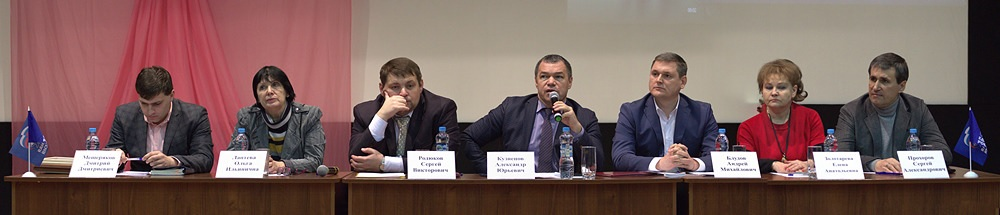

Встреча руководителя Фонда с предпринимателями г. Мичуринска
17 марта 2017 года по приглашению главы администрации города Мичуринска Александра Юрьевича Кузнецова генеральный директор АО МК «Фонд содействия кредитованию малого и среднего предпринимательства Тамбовской области» (далее – Фонд) Андрей Михайлович Блудов принял участие в рабочем совещании с предпринимателями города.
В рамках совещания предприниматели были проинформированы А.М. Блудовым о возможностях реализации своих инициатив и проектов с использованием финансовых механизмов государственной поддержки - предоставления поручительств и гарантий по кредитным договорам, договорам финансовой аренды (лизинга), договорам банковской гарантии Фондом и АО «Федеральная корпорация по развитию малого и среднего предпринимательства. Особый интерес у предпринимателей вызвала информация о программе Фонда по предоставлению микрозаймов.
Данное совещание дало старт мероприятиям, которые пройдут во всех муниципалитетах Тамбовской области и имеют своей целью организацию системной работы по информированию регионального бизнеса о мерах государственной поддержки.
